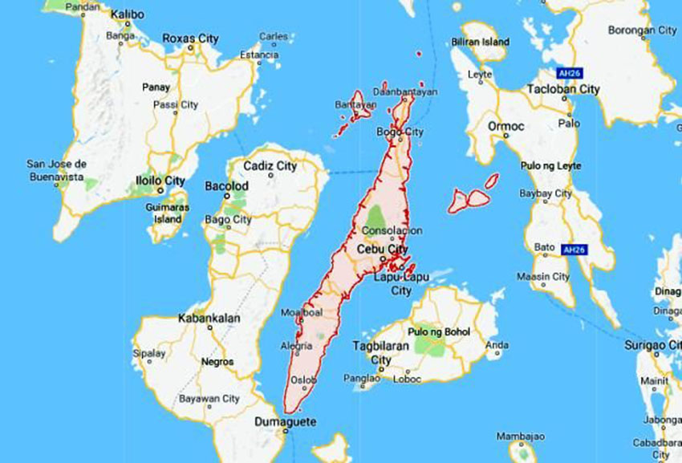
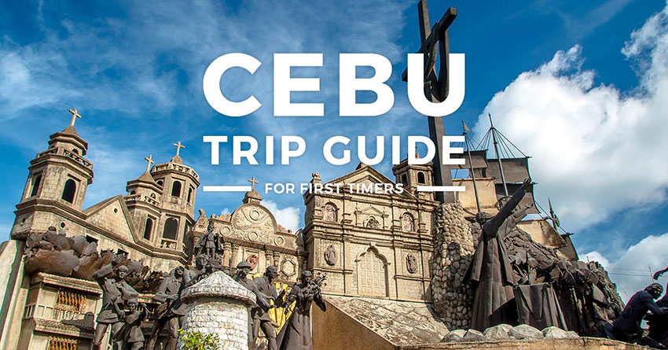

City in the Philippines
Cebu is a province of the Philippines, in the country’s Central Visayas region, comprising Cebu Island and more than 150 smaller surrounding islands and islets. Its prosperous port capital, Cebu City, retains landmarks from its 16th-century Spanish colonial past, including the Basilica Minore del Santo Niño church and triangular Fort San Pedro. Tops, an observation deck on Mt. Busay, has sweeping views over the city. Cebu City is also a gateway to the region’s renowned dive sites and beach resorts. Throughout the province, divers and snorkelers can see whale sharks, turtles, hammerheads and rays among coral reefs, caves and steep walls. The west-coast town of Moalboal has several dive sites, modern resorts, nightlife in Panagsama and the sandy White Beach. Off the north coast of Cebu, tiny Malapascua Island has laid-back beaches and simple resorts, with renowned diving among thresher sharks offshore. Northwestern Bantayan Island focuses on beach life, centered around the village of Santa Fe.
Dec–Jun can be a popular time to visit Cebu's many beaches and dive sites. The climate is warm and humid year-round, with a rainy season Jun–Nov. Typhoons are most likely Oct–Dec. Sinulog (Jan) features Christian processions, traditional dance and colorful parades in honor of a relic brought to the Philippines by Portuguese explorer Ferdinand Magellan. Christian holidays including Holy Week and Easter (dates vary, Mar/Apr) and Christmas (Dec) are also widely celebrated.
Fuerte de San Pedro is a military defense structure in Cebu, built by the Spanish under the command of Miguel López de Legazpi, first governor of the Captaincy General of the Philippines. It is located in the area now called Plaza Indepedencia, in the pier area of the city.

Fuerte de San Pedro is a military defense structure in Cebu, built by the Spanish under the command of Miguel López de Legazpi, first governor of the Captaincy General of the Philippines. It is located in the area now called Plaza Indepedencia, in the pier area of the city.
Concrete, steel & bronze monument featuring various sculptures showing scenes from Cebu's history.
Built in 2012, this elaborate Roman-style temple is dedicated to Leah Villa Albino-Adarna.

Terrazas de Flores is a flower garden where local flowers are meticulously arranged on a mountain slope to form flower terraces. It has over 120 species of plants and flowers, also flaunting other beautiful art and fascinating poetry.
Mactan or Maktan is a densely populated island located a few kilometres from Cebu Island in the Philippines. The island is part of Cebu Province and it is divided into Lapu-Lapu City and the municipality of Cordova.
Magellan's Cross is a Christian cross planted by Portuguese and Spanish explorers as ordered by Ferdinand Magellan upon arriving in Cebu in the Philippines on 16( American Date)17 March 1521.
The Basílica Minore del Santo Niño de Cebú commonly known as the Santo Niño Basilica, is a minor basilica in Cebu City in the Philippines that was founded in the 1565 by Fray Andrés de Urdaneta, O.S.A. and Fray Diego de Herrera, O.S.A..
Colon Street is a historical street in downtown Cebu City that is often called the oldest and the shortest national road in the Philippines. It is named after Cristóbal Colón.
The Cebu Metropolitan Cathedral, officially known as The Metropolitan Cathedral and Parish of Saint Vitalis and of the Immaculate Conception, is the ecclesiastical seat of the Metropolitan Archdiocese of Cebu in Cebu, Philippines. Cebu was established as a diocese on August 14, 1595.
Popular observation spot with casual dining options & sweeping views of the city.
Built in the 1850s, this former residence of Juan Gorordo offers guided tours, a cafe & a gift shop.
Historic residence constructed in the 17th-century featuring hand-carved furniture, art & a garden.